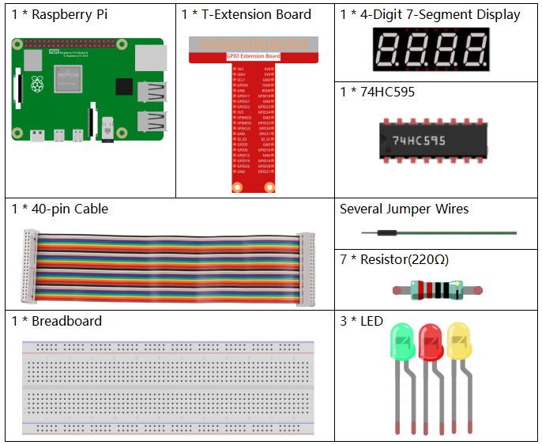

Nota
¡Hola, bienvenido a la comunidad de entusiastas de SunFounder Raspberry Pi, Arduino y ESP32 en Facebook! Profundiza en el uso de Raspberry Pi, Arduino y ESP32 junto a otros entusiastas.
¿Por qué unirte?
Soporte de Expertos: Resuelve problemas post-venta y desafíos técnicos con la ayuda de nuestra comunidad y equipo.
Aprende y Comparte: Intercambia consejos y tutoriales para mejorar tus habilidades.
Avances Exclusivos: Obtén acceso anticipado a anuncios de nuevos productos y adelantos.
Descuentos Especiales: Disfruta de descuentos exclusivos en nuestros productos más recientes.
Promociones Festivas y Sorteos: Participa en sorteos y promociones especiales durante las festividades.
üëâ ¬øListo para explorar y crear con nosotros? Haz clic en [Aqu√≠] y únete hoy mismo.
3.1.7 Semáforo
Introducción
En este proyecto, utilizaremos luces LED de tres colores para simular el cambio de un semáforo. Además, usaremos una pantalla de 7 segmentos de cuatro dígitos para mostrar la cuenta regresiva de cada estado del semáforo.
Componentes
Diagrama de Esquema
T-Board Name |
physical |
wiringPi |
BCM |
GPIO17 |
Pin 11 |
0 |
17 |
GPIO27 |
Pin 13 |
2 |
27 |
GPIO22 |
Pin 15 |
3 |
22 |
SPIMOSI |
Pin 19 |
12 |
10 |
GPIO18 |
Pin 12 |
1 |
18 |
GPIO23 |
Pin 16 |
4 |
23 |
GPIO24 |
Pin 18 |
5 |
24 |
GPIO25 |
Pin 22 |
6 |
25 |
SPICE0 |
Pin 24 |
10 |
8 |
SPICE1 |
Pin 26 |
11 |
7 |

Procedimiento Experimental
Paso 1: Construye el circuito.

Para Usuarios de C
Paso 2: Cambia al directorio.
cd ~/davinci-kit-for-raspberry-pi/c/3.1.7/
Paso 3: Compila.
gcc 3.1.7_TrafficLight.c -lwiringPi
Paso 4: Ejecuta.
sudo ./a.out
Al ejecutar el código, los LEDs simularán el cambio de colores de un semáforo. Primero, se enciende el LED rojo durante 60 segundos, luego el LED verde se enciende durante 30 segundos, y finalmente el LED amarillo se enciende durante 5 segundos. Después, el ciclo vuelve a iniciar con el LED rojo encendido por 60 segundos. Esta secuencia se repetirá continuamente.
Nota
Si no funciona después de ejecutar el programa, o aparece un mensaje de error: "wiringPi.h: No such file or directory", consulta c code is not working?.
Explicación del Código
#define SDI 5
#define RCLK 4
#define SRCLK 1
const int placePin[] = {12, 3, 2, 0};
unsigned char number[] = {0xc0, 0xf9, 0xa4, 0xb0, 0x99, 0x92, 0x82, 0xf8, 0x80, 0x90};
void pickDigit(int digit);
void hc595_shift(int8_t data);
void clearDisplay();
void display();
Estas líneas de código permiten realizar la función de visualización de números en una pantalla de 7 segmentos de 4 dígitos. Consulta 1.1.5 Pantalla de 7 Segmentos de 4 Dígitos para más detalles. Aquí, el código muestra la cuenta regresiva del tiempo del semáforo.
const int ledPin[]={6,10,11};
int colorState = 0;
void lightup()
{
for(int i=0;i<3;i++){
digitalWrite(ledPin[i],HIGH);
}
digitalWrite(ledPin[colorState],LOW);
}
Estas líneas controlan el encendido y apagado de los LEDs.
int greenLight = 30;
int yellowLight = 5;
int redLight = 60;
int colorState = 0;
char *lightColor[]={"Red","Green","Yellow"};
int counter = 60;
void timer(int timer1){ // Función de temporizador
if(timer1 == SIGALRM){
counter --;
alarm(1);
if(counter == 0){
if(colorState == 0) counter = greenLight;
if(colorState == 1) counter = yellowLight;
if(colorState == 2) counter = redLight;
colorState = (colorState+1)%3;
}
printf("counter : %d \t light color: %s \n",counter,lightColor[colorState]);
}
}
Estas líneas controlan el temporizador. Consulta 1.1.5 4-Digit 7-Segment Display para más detalles. Cuando el temporizador llega a cero, se cambia el color de colorState, activando el LED correspondiente y reasignando un nuevo valor al temporizador.
void loop()
{
while(1){
display();
lightup();
}
}
int main(void)
{
//…
signal(SIGALRM,timer);
alarm(1);
loop();
return 0;
}
El temporizador se inicia en la función main(). En la función loop(), se usa un ciclo while(1) y se llaman las funciones de visualización de la pantalla de 7 segmentos y el control de los LEDs. Para Usuarios de Python ^^^^^^^^^^^^^^^^^^^^^^^^^^^^^^^
Paso 2: Cambiar de directorio.
cd ~/davinci-kit-for-raspberry-pi/python/
Paso 3: Ejecutar.
sudo python3 3.1.7_TrafficLight.py
A medida que el código se ejecuta, los LEDs simularán el cambio de colores de un semáforo. Primero, el LED rojo se ilumina durante 60 segundos, luego el LED verde durante 30 segundos; después, el LED amarillo durante 5 segundos. Tras esto, el LED rojo se enciende nuevamente por 60 segundos. Así, esta serie de acciones se ejecutará en un bucle. Mientras tanto, la pantalla de 7 segmentos de 4 dígitos muestra el tiempo de cuenta regresiva de forma continua.
Código
Nota
Puedes Modificar/Restablecer/Copiar/Ejecutar/Detener el código a continuación. Pero antes, debes dirigirte a la ruta del código fuente como davinci-kit-for-raspberry-pi/python.
import RPi.GPIO as GPIO
import time
import threading
# Definir los pines conectados al 74HC595
SDI = 24 # entrada de datos en serie (DS)
RCLK = 23 # entrada de reloj de memoria (STCP)
SRCLK = 18 # entrada de reloj del registro de desplazamiento (SHCP)
number = (0xc0,0xf9,0xa4,0xb0,0x99,0x92,0x82,0xf8,0x80,0x90)
placePin = (10,22,27,17)
ledPin =(25,8,7)
greenLight = 30
yellowLight = 5
redLight = 60
lightColor=("Red","Green","Yellow")
colorState=0
counter = 60
timer1 = 0
def setup():
GPIO.setmode(GPIO.BCM)
GPIO.setup(SDI, GPIO.OUT)
GPIO.setup(RCLK, GPIO.OUT)
GPIO.setup(SRCLK, GPIO.OUT)
for pin in placePin:
GPIO.setup(pin,GPIO.OUT)
for pin in ledPin:
GPIO.setup(pin,GPIO.OUT)
global timer1
timer1 = threading.Timer(1.0,timer)
timer1.start()
def clearDisplay():
for i in range(8):
GPIO.output(SDI, 1)
GPIO.output(SRCLK, GPIO.HIGH)
GPIO.output(SRCLK, GPIO.LOW)
GPIO.output(RCLK, GPIO.HIGH)
GPIO.output(RCLK, GPIO.LOW)
def hc595_shift(data):
for i in range(8):
GPIO.output(SDI, 0x80 & (data << i))
GPIO.output(SRCLK, GPIO.HIGH)
GPIO.output(SRCLK, GPIO.LOW)
GPIO.output(RCLK, GPIO.HIGH)
GPIO.output(RCLK, GPIO.LOW)
def pickDigit(digit):
for i in placePin:
GPIO.output(i,GPIO.LOW)
GPIO.output(placePin[digit], GPIO.HIGH)
def timer(): # función de temporizador
global counter
global colorState
global timer1
timer1 = threading.Timer(1.0,timer)
timer1.start()
counter-=1
if (counter is 0):
if(colorState is 0):
counter= greenLight
if(colorState is 1):
counter=yellowLight
if (colorState is 2):
counter=redLight
colorState=(colorState+1)%3
print ("counter : %d color: %s "%(counter,lightColor[colorState]))
def lightup():
global colorState
for i in range(0,3):
GPIO.output(ledPin[i], GPIO.HIGH)
GPIO.output(ledPin[colorState], GPIO.LOW)
def display():
global counter
a = counter % 10000//1000 + counter % 1000//100
b = counter % 10000//1000 + counter % 1000//100 + counter % 100//10
c = counter % 10000//1000 + counter % 1000//100 + counter % 100//10 + counter % 10
if (counter % 10000//1000 == 0):
clearDisplay()
else:
clearDisplay()
pickDigit(3)
hc595_shift(number[counter % 10000//1000])
if (a == 0):
clearDisplay()
else:
clearDisplay()
pickDigit(2)
hc595_shift(number[counter % 1000//100])
if (b == 0):
clearDisplay()
else:
clearDisplay()
pickDigit(1)
hc595_shift(number[counter % 100//10])
if(c == 0):
clearDisplay()
else:
clearDisplay()
pickDigit(0)
hc595_shift(number[counter % 10])
def loop():
while True:
display()
lightup()
def destroy(): # Cuando se presiona "Ctrl+C", la función se ejecuta.
global timer1
GPIO.cleanup()
timer1.cancel() # cancelar el temporizador
if __name__ == '__main__': # El programa comienza aquí
setup()
try:
loop()
except KeyboardInterrupt:
destroy()
Explicación del Código
SDI = 24 # entrada de datos en serie (DS)
RCLK = 23 # entrada de reloj de memoria (STCP)
SRCLK = 18 # entrada de reloj del registro de desplazamiento (SHCP)
number = (0xc0,0xf9,0xa4,0xb0,0x99,0x92,0x82,0xf8,0x80,0x90)
placePin = (10,22,27,17)
def clearDisplay():
def hc595_shift(data):
def pickDigit(digit):
def display():
Estos códigos se utilizan para implementar la función de visualización numérica de una pantalla de 7 segmentos de 4 dígitos. Consulte 1.1.5 4-Digit 7-Segment Display en el documento para obtener más detalles. Aquí, usamos el código para mostrar la cuenta regresiva del semáforo.
ledPin =(25,8,7)
colorState=0
def lightup():
global colorState
for i in range(0,3):
GPIO.output(ledPin[i], GPIO.HIGH)
GPIO.output(ledPin[colorState], GPIO.LOW)
Estos códigos se usan para encender y apagar el LED.
greenLight = 30
yellowLight = 5
redLight = 60
lightColor=("Red","Green","Yellow")
colorState=0
counter = 60
timer1 = 0
def timer(): # función de temporizador
global counter
global colorState
global timer1
timer1 = threading.Timer(1.0,timer)
timer1.start()
counter-=1
if (counter is 0):
if(colorState is 0):
counter= greenLight
if(colorState is 1):
counter=yellowLight
if (colorState is 2):
counter=redLight
colorState=(colorState+1)%3
print ("counter : %d color: %s "%(counter,lightColor[colorState]))
Los códigos se usan para controlar el temporizador. Consulte 1.1.5 4-Digit 7-Segment Display para obtener más detalles. Aquí, cuando el temporizador llega a cero, colorState cambiará para alternar el LED, y el temporizador se asignará a un nuevo valor.
def setup():
# ...
global timer1
timer1 = threading.Timer(1.0,timer)
timer1.start()
def loop():
while True:
display()
lightup()
def destroy(): # Cuando se presiona "Ctrl+C", se ejecuta la función.
global timer1
GPIO.cleanup()
timer1.cancel() # cancelar el temporizador
if __name__ == '__main__': # El programa comienza aquí
setup()
try:
loop()
except KeyboardInterrupt:
destroy()
En la función setup(), se inicia el temporizador. En la función loop(),
se utiliza un bucle while True para llamar repetidamente a las funciones
relacionadas con la pantalla de 7 segmentos de 4 dígitos y el LED.
{kind=link}